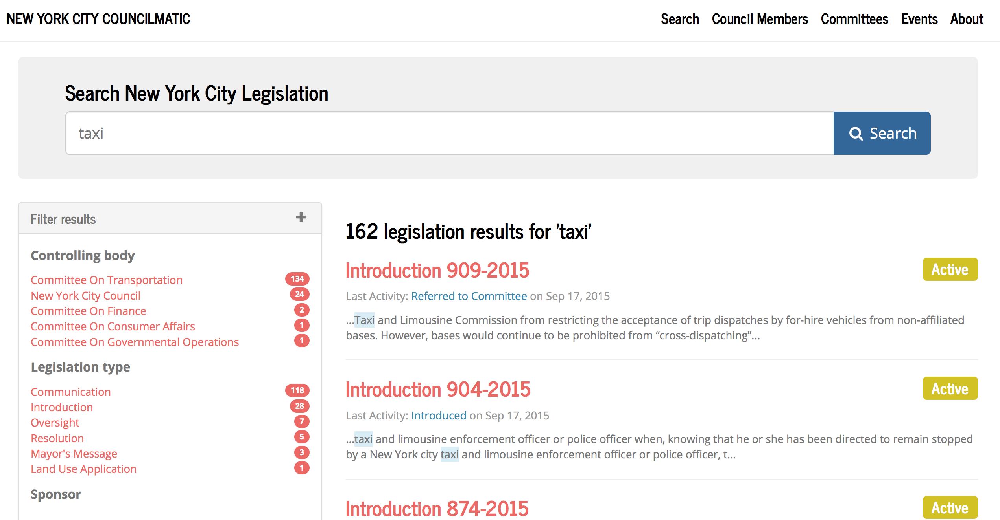
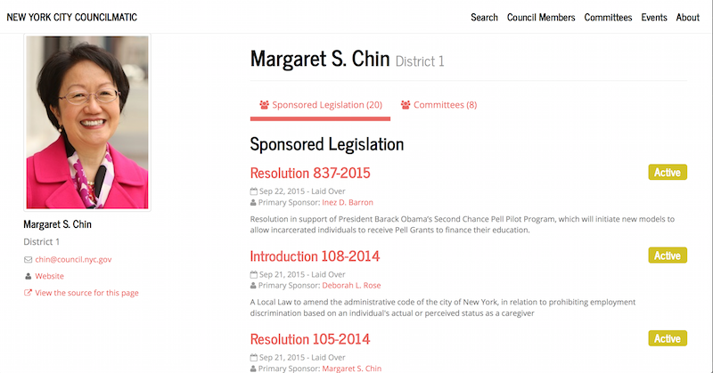
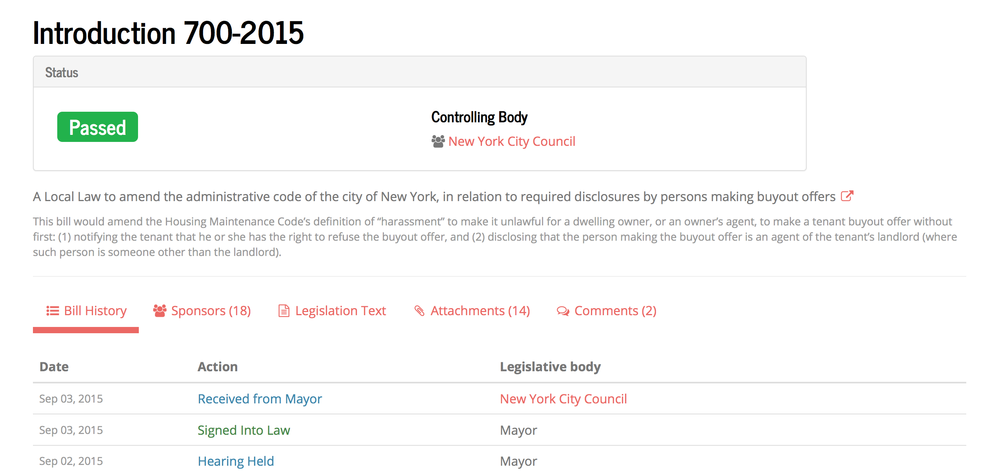

Los Angeles Metro
Search over 1,000 board reports and members of the Board of Directors from 2014 to today.

Features
Powerful searching and filtering
Get to know your council members
Never miss a committee meeting
Track bills from introduction to law, and everywhere inbetween
Open, open, open
Free and open access, open source code and open data.
 Browse our code »
Browse our code »
 Powered by Open Civic Data »
Powered by Open Civic Data »